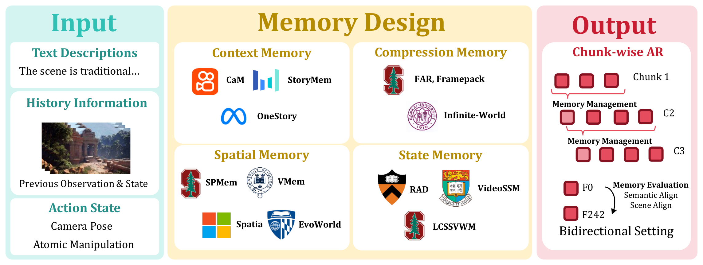
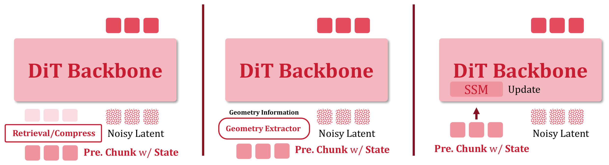
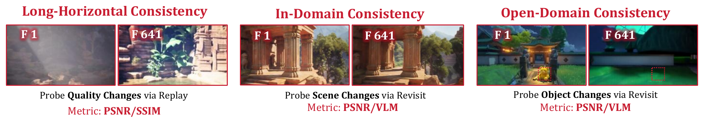
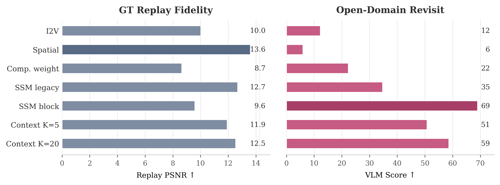

Echo Team · Joy Future Academy, JD · Technical Report
Echo-Memory
A Controlled Study of Memory in Action World Models
When the camera leaves and returns, which memory keeps the same world instead of a plausible but different scene?
01 · Overview
One backbone, one protocol — only memory changes.
Echo-Memory fixes the action-to-video stack and varies only how history is stored and read back. Replay, in-domain loop closure, and open-domain return are reported together.

02 · Memory Design
Context · Compression · Spatial · State-Space
- Context K = 1 / 5 / 20
- Compression r = 4
- Spatial read/write state
- State-Space block-wise SSM

03 · Evaluation
Replay · In-domain revisit · Open-domain return
- Replay PSNR / SSIM / LPIPS
- In-domain 180° loop + VLM
- Open-domain edited frames + 45° probe

04 · Qualitative Evidence
Return probes expose identity drift.

05 · Main Conclusions
Replay quality ≠ memory quality.
- Raw context scales open-domain return more than replay.
- Compact memory can drop identity on return.
- Block-wise SSM strongest open-domain return in our matrix.

06 · Citation
BibTeX
@article{king2026echomemory,
title={Echo-Memory: A Controlled Study of Memory in Action World Models},
author={King, Wayne and Xue, Zeyue and Bian, Yuxuan and Huang, Jie and Li, Haoran and Li, Yaowei and Su, Yaofeng and Li, Yuming and Wang, Haoyu and Zhang, Shiyi and Zhang, Songchun and Niu, Yuwei and Xu, Sihan and Zhuang, Junhao and Huang, Haoyang and Duan, Nan},
journal={Echo-Memory technical report},
year={2026}
}